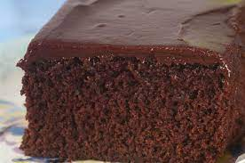

receita de bolo de chocolate
INGREDIENTES
Massa:
- 4 ovos
-
- 2 colheres (sopa) de manteiga
-
- 2 xícaras (chá) de açúcar
-
- 2 colheres (sopa) de fermento
Calda:
- 2 colheres (sopa) de manteiga
- 7 colheres (sopa) de chocolate em pó
- 2 latas de creme de leite com soro
- 3 colheres (sopa) de açúcar)
(MODO DE PREPARO
assa:
- Em um liquidificador adicione os ovos, o chocolate em pó, a manteiga, a farinha de trigo, o açúcar e o leite, depois bata por 5 minutos.
Adicione o fermento e misture com uma espátula delicadamente.
Em uma forma untada, despeje a massa e asse em forno médio (180 ºC) preaquecido por cerca de 40 minutos. Não se esqueça de usar uma forma alta para essa receita: como leva duas colheres de fermento, ela cresce bastante! Outra solução pode ser colocar apenas uma colher de fermento e manter a sua receita em uma forma pequena.
Calda:
Em uma panela, aqueça a manteiga e misture o chocolate em pó até que esteja homogêneo.
Acrescente o creme de leite e misture bem até obter uma consistência cremosa.
Desligue o fogo e acrescente o açúcar.)
- (Um bom bolo de chocolate fofinho aquece o coraçãozinho, né? Quer deixar essa receita ainda mais deliciosa e chocolatuda? Adicione na massa chocolate meio amargo derretido em banho-maria! O sabor vai ficar ainda mais intenso e incrível, não vai dar vontade de parar de comer!
Peneirar ingredientes, na hora de fazer a massa, ajuda com que ela fique ainda mais linda e cresça bastante! Por isso, peneire a farinha de trigo e os ovos antes de adicioná-los à massa! A farinha peneirada evita gruminhos na massa, fazendo com que fique lisa e cresça melhor, e os ovos peneirados tiram o gosto ou odor do ovo da receita, deixando o cheirinho de chocolate tomar conta de tudo! Incrível, né?
Caso ache necessário, você pode fazer seu bolo de chocolate na batedeira em vez de fazer no liquidificador, o resultado fica perfeito também!)
-
